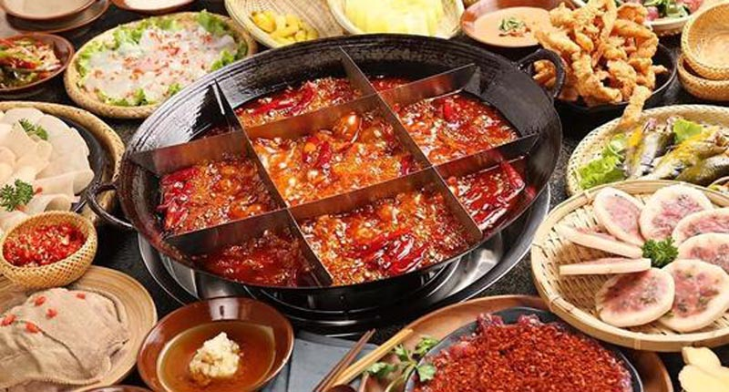

Sichuan cuisine, is a style of Chinese cuisine originating from Sichuan Province. It has bold flavours, particularly the pungency and spiciness resulting from liberal use of garlic and chili peppers, as well as the unique flavour of Sichuan pepper. There are many local variations within Sichuan Province and the neighbouring Chongqing Municipality, which was part of Sichuan Province until 1997. Four sub-styles of Sichuan cuisine include Chongqing, Chengdu, Zigong and Buddhist vegetarian style. The complex topography of Sichuan Province, including its mountains, hills, plains, plateaus and the Sichuan Basin, has shaped its food customs with versatile and distinct ingredients. (Source: Wikipedia)
Abundant rice and vegetables are produced from the fertile Sichuan Basin, whereas a wide variety of herbs, mushrooms and other fungi prosper in the highland regions. Pork is overwhelmingly the most common type of meat consumed.Beef is somewhat more common in Sichuan cuisine than it is in other Chinese cuisines, perhaps due to the prevalence of oxen in the region. Sichuan cuisine also uses various bovine and porcine organs as ingredients, such as intestine, arteries, head, tongue, skin and liver, in addition to other commonly used portions of the meat. Rabbit meat is also much more popular in Sichuan than elsewhere in China. It is estimated that the Sichuan Basin and Chongqing area are responsible for about 70 percent of China's total rabbit meat consumption.Yoghurt, which probably spread from India through Tibet in medieval times, is consumed among the Han Chinese. This is an unusual custom in other parts of the country. The salt produced from Sichuan salt springs and wells, unlike sea salt, does not contain iodine, which led to goiter problems before the 20th century.(Source: Wikipedia)
Hot pot, also known as steamboat, is a Chinese cooking method, prepared with a simmering pot of soup stock at the dining table, containing a variety of East Asian foodstuffs and ingredients. While the hot pot is kept simmering, ingredients are placed into the pot and are cooked at the table, in a manner similar to fondue. Typical hot pot dishes include thinly sliced meat, leaf vegetables, mushrooms, wontons, egg dumplings, tofu, and seafood. The cooked food is usually eaten with a dipping sauce. (Source: Wikipedia) There are many reasons why hot pot gained popularity among the Chinese. One folklore mentions that the Qianlong Emperor of the Qing dynasty enjoyed hot pot and had it frequently. When hosting banquets in the palace, the Qianlong Emperor always asked the servants to prepare hot pots. His son, the Jiaqing Emperor, also liked hot pot. On the day the Jiaqing Emperor ascended the throne, he set more than 1,500 tables of hot pots to celebrate. Having heard of the emperors’ love for hot pot, the common people desired to try it out as well and thereafter hot pot became popular among the masses. Another suggested reason is that hot pot has the power to enhance friendship and unite family members or colleagues. Several people sit around a pot, talking and eating. The warm air is also considered to make people comfortable.(Source: Wikipedia)